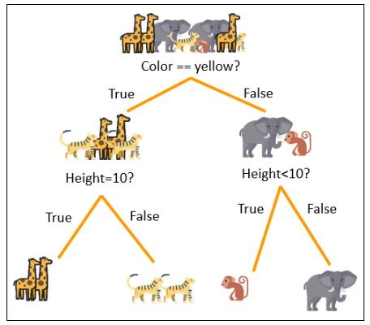
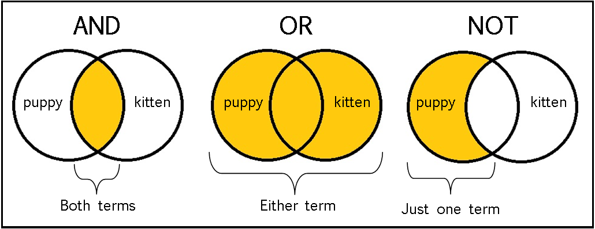

19 minutes
Conditionals
Today is a big day! We’re going to meet one of the most essential parts of the Python language: conditionals. After you’ve mastered conditionals, you’ll be amazed at how much more you can do in Python. Let’s get to work!
What is programming and why do we do it?
These are big questions. There are many reasons why we write programs. Perhaps you’re a data scientist who wants to use sales data to decide whether or not to sell a particular product. Or maybe you’re a teacher who wants to write a program that automatically grades homework assignments. Or perhaps you just bought an old, remote cabin out in the woods with a big lawn and a library full of books, and you want to write a program that will dim the lights so that you can enjoy a quiet dinner with your partner.
Common to almost all of these reasons is a common mantra:
Programs are sets of instructions which automate some aspect of decision-making.
As of yet, we have talked about many of the essential parts of the Python language such as printing, user-supplied input, variables, mathematical operations, and lists. But we haven’t talked at all about how to perform basic decision-making in Python. So let’s get right to it!
What are conditionals?
When it comes to decision-making in Python, nothing is as important as the concept of conditionals.
Conditional statements perform one (or multiple) action(s) based on whether a particular Boolean expression is True or False.
To illustrate this idea, let’s step back in time to the mid-1800s. Specifically, we’re going to take a look at an argument in the English philosopher John Stuart Mill’s 1843 treatise “A System of Logic: Ratiocinative and Inductive.” In this treatise, Mill uses this example to illustrate a basic logical argument:
All men are mortal.
Socrates is a man.
Therefore, Socrates is mortal.
This might not be immediately clear, but these three lines constitutes our first example of a conditional. To see this, let’s write the second two lines of the argument in another way:
if <input> is a man:
then <input> is mortal.
In the first line, we test to see whether <input> is a man; this is the Boolean condition mentioned in the definition of conditional statements. If this Boolean statement is True, we conclude that <input> is mortal, which is the action performed by the conditional statement. Thus, as Socrates is a man, this pseudocode will determine that Socrates is in fact mortal when we pass Socrates as <input>.
Conditionals in Python: A first example
Let’s make this a little bit more concrete. Say that you want to buy a dog. But not just any dog. You don’t like small dogs, because. . . well, do I really need to explain? And now that you’re a programmer, you decide that it’s a great idea to write a script that will tell you whether or not you should buy a dog. Here’s a program – let’s call it buy_a_dog.py – that you might write to accomplish this task:
print('Should you buy the dog?')
dog_weight = int(input('How much does the candidate dog weigh (in lbs)? '))
if dog_weight > 40:
print('Yes!')
else:
print('No.')
This program will print ‘Yes!’ if the weight you input is larger than 40 lbs; otherwise it will print ‘No!’. Here’s some sample output:
$ python buy_a_dog.py
Should you buy the dog?
How much does the candidate dog weigh (in lbs)? 25
No.
$ python buy_a_dog.py
Should you buy the dog?
How much does the candidate dog weigh (in lbs)? 100
Yes!
This is an important point of divergence from what we’ve seen this far in this Python course. Specifically, this is the first time we’ve seen a program that can make a decision that depends on user-supplied input. The example shown above will be the first of many times we see decision-making implemented in code.
Exercise 1 (A first look at conditionals)
You’ve just seen your first conditional! In this exercise, I’m going to ask you to implement your own conditional. Here’s the game plan.
Let’s say that you’re planning on going on a quiet, evening-time walk along the river with your significant other. However, if the temperature is less than a given threshold, you’ll stay inside and watch a movie instead. Your job is to write a program that will tell you whether or not you should go for a walk. Here’s some sample output:
$ python go_for_a_walk.py
Question: Should you go for a walk with your partner?
Enter the current temperature (in degrees Fahrenheit): 72
What is your temperature threshold (in degrees Fahrenheit): 10
Answer: Absolutely, yes!
$ python go_for_a_walk.py
Question: Should you go for a walk with your partner?
Enter the current temperature (in degrees Fahrenheit): 2
What is your temperature threshold (in degrees Fahrenheit): 10
Answer: Nah, stay inside and watch that movie!
You’ve got this! And as always, if you’re more of a Celsius person, feel free to edit your program to reflect this. I certainly won’t hold it against you.
Writing conditionals in Python: The if-elif-else paradigm
Let’s take the opportunity to step back and look at the general syntax for writing conditionals in Python. This syntax – you know what, let’s call it a paradigm – goes by many names, but in these notes, I’m going to refer to it as the if-elif-else paradigm.
When it comes to conditionals, there are three new keywords that we need to talk about. Having told you that we’ll be learning about the if-elif-else paradigm, it should come as no surprise that these three words are if, elif, and else.
You saw if and else in the previous section; these two keywords allow you to take different actions based on a single Boolean condition. Our new friend in this section is elif, which is short for “else if.” elif allows us to add additional Boolean hypotheses to our conditional. Here’s an example:
my_number = int(input('Enter a number between 1 and 4: '))
if my_number == 1:
print("You entered the first (and second) Fibonacci number!")
elif my_number == 2:
print("You entered the smallest prime number!")
elif my_number == 3:
print("According to Pythagoras, you entered the 'noblest' of digits!")
elif my_number == 4:
print("You entered the only number that is spelled with the same number of characters as the number itself!")
else:
print("Make sure you entere a number between 1 and 4!")
The general syntax of the if-elif-else paradigm allows you to include as many Boolean conditions as you want:
if <Boolean expression>:
<statement(s)>
elif <a second Boolean expression>:
<statement(s)>
elif <a third Boolean expression>:
<statement(s)>
...
else:
<statement(s)>
In the script we wrote above, you get a different output depending on whether you enter 1, 2, 3, 4. As a bonus, in the else clause, we print out a message that tells the user that the entered an invalid input. This is often the way else is used – as a catchall for cases not specifically defined by your if and elif statements.
Exercise 2 (Multiple conditions)
Let’s revisit the earlier section in which we made our dog-purchasing decision based on the weight of a candidate dog. The setup is going to be exactly the same as before, with one small catch: You also don’t want your dog to be too large, because you have but a small apartment and you don’t want your future dog to feel cooped up. And so you only want to buy a dog if it’s heavier than 40 lbs but lighter than 90 lbs. Your job is to write a script using the if-elif-else paradigm to determine whether or not you should buy a given dog. Here’s some sample output:
$ python buy_a_dog.py
Should you buy the dog?
How much does the candidate dog weigh (in lbs)? 25
No, the dog is too light.
$ python buy_a_dog.py
Should you buy the dog?
How much does the candidate dog weigh (in lbs)? 100
No, the dog is too heavy.
$ python buy_a_dog.py
Should you buy the dog?
How much does the candidate dog weigh (in lbs)? 63
Yes, the dog is just right!
Conditionals of all shapes and sizes
As you might imagine, conditionals can get considerably more complicated within the if-elif-else paradigm. To illustrate one such situation, let’s return once more to our dog-buying example. Your script – buy_a_dog.py – in the previous exercise should have looked something like this.
print('Should you buy the dog?')
weight = int(input('How much does the candidate dog weight (in lbs)? '))
if weight <= 40:
print('No, the dog is too light.')
elif weight >= 90:
print('No, the dog is too heavy.')
else:
print('Yes, the dog is just right!')
Let’s say that we want to simplify this script by supplying a simple “yes” or “no” answer. So if the candidate dog is heavier than 90lbs or lighter than 40lbs, we will simply print “No.”, and otherwise, we will print “Yes!”. The updated script would look something like this:
print('Should you buy the dog?')
weight = int(input('How much does the candidate dog weight (in lbs)? '))
if weight <= 40:
print('No.')
elif weight >= 90:
print('No.')
else:
print('Yes!')
This will certainly work, but we should ask ourselves: Is this the most concise and readible way of writing this program? There is a redundancy between the if and elif statement that isn’t particularly pleasing. That is, we have two logical cases that will cause the program will print “No.” If we had many more cases to consider, this redundancy may become confusing to those who will be reading our code in the future.
How should we think about removing this redundancy? Well, since the if and elif clauses will yield the same output, it would be awfully nice if we could somehow combine them into a single clause. And luckily, Python has just the tool for the job: the or keyword.
print('Should you buy the dog?')
weight = int(input('How much does the candidate dog weight (in lbs)? '))
if weight <= 40 or weight >= 90:
print('No.')
else:
print('Yes!')
The neat thing here is that we have used Python’s or keyword to combine the two cases that lead to the same output. This program will print “No.” if the weight is less than 40 lbs or if the weight is greater than 90 lbs. I hope you agree that this is a much clearer way of writing the program than our first version.
Exercise 3 (The and keyword)
You just met the or keyword, which is essential for chaining together logical expressions. Now it’s time to meet or’s best friend: the and keyword. and can be used in exactly the same way as or, except that you will enter the conditional if both of the Boolean conditions are True, rather than only one or the other needing to be True when using or.
Let’s try it out! Rewrite the version of buy_a_dog.py that we wrote at the end of the previous section using the and keyword instead of the or keyword. Note that it isn’t just a one-for-one swap; replacing or with and will result in a program that will never print “No.”, because it’s impossible for a number to be both less than 40 and greater than 90. Give it a shot!
Nesting conditionals
We started this lesson by talking about decision-making and the if-elif-else paradigm. This paradigm is powerful and flexible, letting us make all kinds of decisions. To give you an idea of how this paradigm can be used to make more interesting decisions, consider the following scenario.
You’re a zookeeper. And it’s your first day on the job. And as part of your job, you need to be able to tell the animals in the zoo apart. Not having had much experience with zoos, you aren’t sure how to tell apart some of the animals. Luckily, you recently mastered the Python programming language, and you have the bright idea to write a script that will help you tell the animals apart. In particular, you need to be able to tell apart four different animals: giraffes, tigers, monkeys, and elephants.
An informative poster inside the zoo office gives you a set of simple rules for determining how to tell these four animals apart. And here is that poster:

Since you’re a Python master, you know all about the if-elif-else paradigm and Python’s and keyword. And because of this, you are able to write the following script – which you call find_an_animal.py – to help you with your problem.
color = input('What color is the animal? ')
height = int(input('What is the height of the animal? '))
if color == 'yellow' and height == 10:
print('The animal is a giraffe!')
elif color == 'yellow' and height != 10:
print('The animal is a tiger!')
elif color != 'yellow' and height < 10:
print('The animal is a monkey!')
elif color != 'yellow' and height >= 10:
print('The animal is an elephant!')
Delighted with your day’s work, you go around to each of the exhibits with your laptop in tow. You can now tell all of the animals apart. You go to sleep warm and satisfied.
However, upon waking, something occurs to you. You learned that Python should be readible and have as little redundancy as possible, and the find_an_animal.py script that you wrote yesterday could adhere to these standards slightly better. In particular, it’s somewhat frustrating that the decisions don’t execute in the same manner as the poster you saw earlier (also known as a decision tree). In that poster, you make one decision at a time, rather than having to consider all sets of possible outcomes.
So, on your second day of work, you decide to break new ground by writing your program so that it more closely adheres to the poster. And here’s what you come up with:
color = input('What color is the animal? ')
height = int(input('What is the height of the animal? '))
if color == 'yellow':
if height == 10:
print('The animal is a giraffe!')
else:
print('The animal is a tiger!')
else:
if height < 10:
print('The animal is a monkey!')
else:
print('The animal is an elephant!')
Woah! Let’s take a look at what you came up with. Rather than combining every set of possible outcomes, you nested your conditionals, meaning that you have one conditional statement within another. Although this takes more lines, I hope you’ll agree that it is much easier to read and that it much more closely adheres to the poster you saw earlier.
Nesting is useful feature of the if-elif-else paradigm. It allows us to make multi-level decisions, as illustrated in the example above. The next exercise will give you some more practice with nesting conditionals.
Exercise 4 (Nest your own conditionals)
I hope you’re not tired of the buying-a-dog example yet, because in this exercise we’ll be returning to it one more time. I want you to rewrite the script from Exercise 3 using a nested conditional statement. Try it out, and if you get stuck, look back at the previous section on nested conditionals.
The final piece of the puzzle: Negation
In this lesson, we’ve talked a lot obout conditionals. So far, you’ve learned about the if-elif-else paradigm, met two new keywords (or and and), and tried your hand at nesting conditionals. In this section, I’ll tell you about the final piece of the puzzle.
When it comes to writing the Boolean hypothesis piece of conditional statements, you’ve learned about how to write a conjunction of two clauses (e.g., A and B) and you’ve learned how to write the disjunction of two clauses (e.g., A or B). If you’re already familiar with Boolean logic, you’ll know that there’s one piece of the puzzle missing, and that piece is how one can write a negation (e.g., not A). These three operations – conjunction (and), disjunction (or), and negation (not) – form the basis of Boolean logic, and allow you to define a wide variety of logical statements.

The negation operation allows you to enter a conditional when the Boolean hypothesis is False. For example:
answer = False
if not answer:
print('Why not!? I really want a puppy!')
else:
print('Yay!')
Notice that in this snippet, we can enter the first conditional when answer is False by adding Python’s not keyword. In plain words, you should read this as
if answer is not True:
then print out the words 'Why not!? I really want a puppy!'
otherwise:
then print out the words 'Yay!'
With the Python keywords and, or, and not in hand, the wide world of Boolean logic is yours to explore!
Review
Let’s summarize what we’ve learned in this lesson.
-
What is programming. Altough as programmers we may have different motivations or use-cases in mind for writing programs, there is one commonality: Programming is all about decision-making. At the most abstract level, programs are sets of instructions which automate some aspect of decision-making.
-
What are conditionals. Conditional statements perform one (or multiple) action(s) based on whether a particular Boolean expression is True or False. Conditionals form the basis of how programs make decisions in nearly all programming languages.
-
Writing conditionals in Python: The
if-elif-elseparadigm. When writing conditionals in Python, there are three keywords that you need to know:if,elif, andelse. These three keywords can be used to define conditional statements in Python using what I call theif-elif-elseparadigm. -
Conditionals of all shapes and sizes. It often improves readibility and conciseness to condence conditionals that lead to the same outcome. One way to do this is by means of the
orkeyword, which allows you to enter a conditional statement if either or both of the conditions specified are True. -
Exercise 3 (The
andkeyword). In a similar vein, theandkeyword allows you to enter a conditional if both of the supplied conditions are True. -
Nesting conditionals. Conditionals can be nested within one another. This can improve readibility in some cases, and can be more consistent with human notions of logic.
-
The final piece of the puzzle: Negation. In addition to specifying conjuncations (e.g.,
A and B) and disjunctions (e.g.,A or B) in conditionals, one can also specify the negation of a variable (e.g.,not A) via Python’snotkeyword.
Bonus content I: The ternary operator
It’s time for some bonus content! Yes you heard that right - you got to the end of this lesson, and you deserve a reward. And today, your first reward is going to be Python’s ternary operator syntax. Before I tell you what that means, a word of caution: I don’t like ternary operators, and I rarely use them in my code. They aren’t particularly readible, and while they’re compact, this doesn’t necessarily lead to a better program. For these reasons, a discussion of ternary operators was relegated (by me) to the bonus content.
And so to you, dear reader, I say: Caveat emptor. But without further adieu, let’s jump right into it.
A ternary operator allows you to perform and
if-elsestatement in a single line.
In this way, if you wanted to write our recurring buy_a_dog.py script in fewer lines, you could do the following:
print('Should you buy the dog?')
dog_weight = int(input('How much does the candidate dog weigh (in lbs)? '))
outcome = "Yes!" if (40 <= dog_weight and dog_weight <= 90) else "No."
print(outcome)
Once you run this code, you’ll see that this concise sytanx will get the job done: It will print “Yes!” if the weight of the dog is in the correct range, and “No.” otherwise. But if you’re asking me, there were better versions of this script in this lesson, which are easier to read for future maintainers of your code.
Bonus content II: Concise comparisons
By the way, when considering the example from the previous bonus content section, this would also work:
print('Should you buy the dog?')
dog_weight = int(input('How much does the candidate dog weigh (in lbs)? '))
outcome = "Yes!" if 40 <= dog_weight <= 90 else "No."
print(outcome)
That is, 40 <= dog_weight and dog_weight <= 90 is equivalent to 40 <= dog_weight <= 90 in Python. This little trick makes the ternary operator a little bit more readible. But still, my sentiments regarding the ternary operator remain.
Bonus content III: Match statements
You know that I always like to spill the hottest tea for you, and the release of Python 3.10 last year has provided just that. In this lesson, you met conditionals, which follow the if-elif-else structure. This is the traditional way of writing conditionals; most other langauges (e.g., Java, C++, MATLAB, etc.) have a similar syntax.
However, there is a new sheriff in town, and he’s here to stay. And that sheriff is known as the match statement. Here’s how it works. Let’s return to the script we wrote in the section on the if-elif-else paradigm that tells us a cool fact about each of the numbers between 1 and 4. In that section, we used if, elif, and else to define five different logical cases. This was all good and well, but it was a little bit cumbersome. We had to write the variable name my_number and the == sign four times. And if our Boolean conditions had become more complicated, this program would easily have started to look like a mess.
This is precisely the motivation for match statements. Below, I’ve written a program equivalent to the one you saw earlier using a match statement.
my_number = int(input('Enter a number between 1 and 4: '))
match my_number:
case 1:
print("You entered the first (and second) Fibonacci number!")
case 2:
print("You entered the smallest prime number!")
case 3:
print("According to Pythagoras, you entered the 'noblest' of digits!")
case 4:
print("You entered the only number that is spelled with the same number of characters as the number itself!")
case other:
print("Make sure you enter a number between 1 and 4!")
This is much cleaner. The match my_number line signals that the program should check whether or not my_number is equal to any of the ensuing cases. So for instance, case 1: is equivalent to if my_number == 1:. Similary, the keyword other here used in the case other: line is equivalent to else: in the if-elif-else paradigm.
Of course, conditionals can be much more complicated than this. And when the going gets tough, match statements tend to rise to the occasion. I won’t elaborate further in this set of notes, but if you’re interested, there is a nice documentation page on match statements here.
Additional exercises
Exercise 5 (Using and, or, and not)
Let’s say we have three Boolean variables: a, b, and c. For the sake of the exercise, let’s arbitarily set their values to a = True, b = False, and c = True. Your job is to determine the whether the following statements are True or False:
not ba and ba and cnot a and not ba and b and c